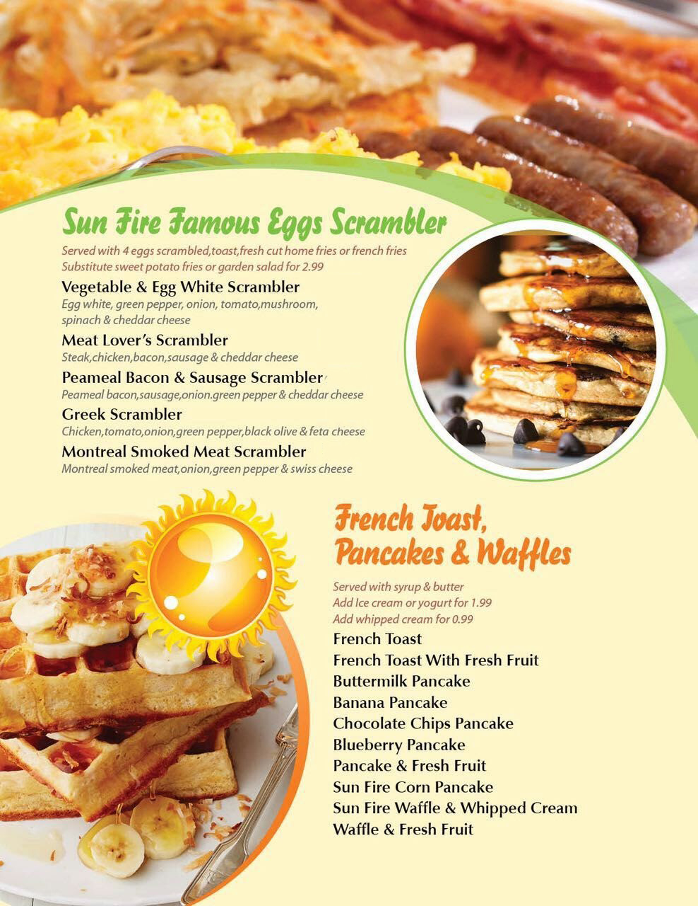

<link rel="import" href="../../bower_components/polymer/polymer-element.html">

<dom-module id="sunfire-menu">
  <template>
    <style>
      :host {
        width: 100%;
        min-height: calc(100vh - 171px);
        display: flex;
        flex-direction: column;
        align-items: center;
        --carousel-component-button-color: #4b7c46;
      }
      carousel-component {
        width: calc(100% - 80px);
        max-width: 840px;
        min-width: 300px;
        margin: 40px 20px;
        contain: content;
      }

      carousel-component::after {
        display: block;
        content: '';
        padding-top: 133%; /* 4:3 = height is 75% of width */
      }

      carousel-component img {
        position: absolute;
        left: 50px;
        width: calc(100% - 100px);
        height: 100%;
      }
    </style>

    <carousel-component>
      
      
      
      
      
      
      
    </carousel-component>
  </template>

  <script>
    class SunfireMenu extends Polymer.Element {
      static get is() { return 'sunfire-menu'; }
      static get properties() {
        return {
        };
      }
    }

    window.customElements.define(SunfireMenu.is, SunfireMenu);
  </script>
</dom-module>
